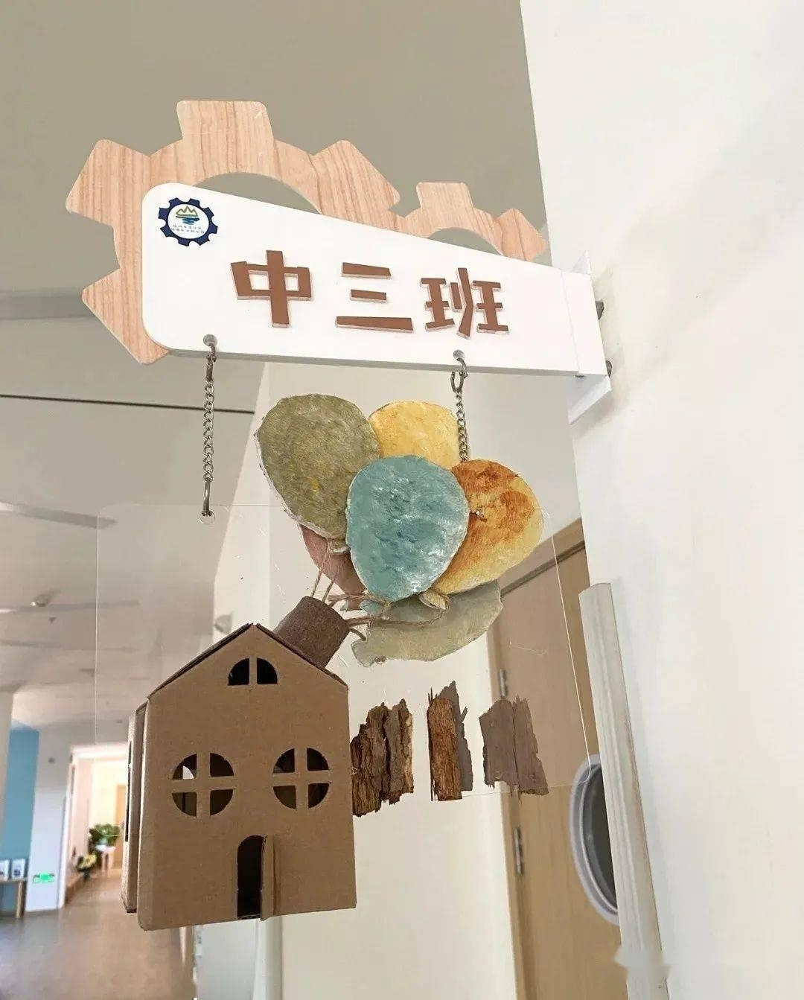

Phần 1: Suỵt! Bạn học của bạn đã chết
“Tinh…”
Đây là… đâu?
Mạnh Kiều mở choàng mắt, nhìn quanh bốn phía.
Vách tường trắng lục đan xen, mực xanh và bảng đen cùng bàn học chỉnh tề.
Đây là một phòng học.
Cô nhìn xung quanh trái phải, cửa kính bên cạnh phản chiếu gương mặt hơi tiều tụy của cô. Nhìn chính mình trong kính, cô hoài nghi kéo cổ áo của mình ra, lộ ra một đoạn cổ trắng nõn và xương quai xanh, nét mặt cô bởi vậy mà càng thêm nghiêm trọng.
Kỳ lạ! Vết thương do bị bệnh đâu rồi?
Một tháng trước, Mạnh Kiều bị một loại bệnh truyền nhiễm kỳ lạ, tỉ lệ tử vong gần như 100%. Người mắc bệnh, cả người mọc đầy lỗ màu đen cả to cả nhỏ, giữa lỗ đen chảy ra nước đặc tanh hôi, từ trong ra ngoài giống thối rữa. Ba ngày trước, toàn bộ từ cổ đến cánh tay cô đều chi chít lỗ đen như là than tổ ong đen.
Cô vốn phải chết.
Nhưng giờ phút này, những lỗ đen đó lại biến mất như một kỳ tích.
Mạnh Kiều nghiêm túc xem kỹ cơ thể của mình một lượt, tất cả vết thương do việc điều trị và bị bệnh đã biến mất, làn da bóng loáng không để lại chút dấu vết nào. Ngay cả vết sẹo do lúc trước cô dùng dao nhỏ cắt thịt thối của mình ra cũng biến mất.
Mình đã chết hay là sống lại lần nữa?
Trời cao cho mình một cơ hội về lại thời trung học à?
Không đúng! Đây không phải trường trung học của mình.
“Cốc cốc cốc…”
Tiếng đập cửa cắt đứt mạch suy nghĩ của Mạnh Kiều, cô ngờ vực định đi mở cửa xem ai đang gọi mình, nhưng lúc đi được nửa đường thì cô dừng chân.
Thay vào đó, cô nhanh chóng lao về cửa sổ phía sau lưng. Cô đẩy cửa sổ ra mới phát hiện mình hoàn toàn không thể nhảy xuống được.
Nơi này là tầng 4.
“Mạnh Kiều!”
“Mạnh Kiều, cậu có trong đó không?”
“Mở cửa cho tớ!”
Âm thanh ngoài cửa liên tục vang lên, nhưng Mạnh Kiều dựa vào cửa sổ cứng lạnh không nhúc nhích, trong đầu nhanh chóng vận chuyển thu thập tin tức: Cô hẳn đang ở một khu nhà trong trường học, nhìn từ độ cao của bàn học và cách sắp xếp phòng học thì là một gian phòng học của cấp ba. Trong phòng học không có bất kỳ dấu vết học tập nào của học sinh, trên bàn sách đã phủ kín một lớp bụi rất dày. Nơi này hoặc là một phòng học bỏ đi hoặc là cả trường học này đều đã bỏ hoang.
Lúc này ngoài cửa truyền đến tiếng gọi tên mình, có là ai thì cô cũng sẽ không ra mở cửa.
Hơn nữa, cho dù âm thanh ngoài cửa vang lên liên tục nhưng cô lại không nhìn thấy tí bóng dáng nào từ khe cửa.
Mạnh Kiều không động đậy.
Âm thanh ngoài cửa rất xa lạ, không giống như người mà cô quen biết.
“Không phải cậu ta chết rồi đấy chứ?”
“Không biết! Nhanh phá cửa đi!”
“Chẳng lẽ cậu ta cũng thắt cổ ở trong đó rồi!”
“Có khi không có trong đấy, chúng ta đi nơi khác tìm xem.”
Mạnh Kiều nghe thấy người tụ tập ngoài cửa ngày càng nhiều, tiếng đập cửa cũng theo đó lớn dần. Cửa gỗ màu vàng của phòng học bị đập gõ điên cuồng chấn động, khe cửa càng lúc càng lớn.
Nhưng ngoài cánh cửa trước mặt ra, thì đã không còn chỗ nào có thể chạy trốn. Cô nhanh chóng nhìn xung quanh phòng học, tìm một vòng chỉ có ê-ke dán trên bảng đen là có thể làm vũ khí phòng thân tạm thời.
“… Rầm rầm rầm!”
Tiếng đập cửa càng lúc càng lớn.
“Phá cửa đi!”
“Đừng xảy ra chuyện gì!”
Ngoài cửa cực kỳ ầm ĩ.
Mạnh Kiều hít sâu một hơi, nói: “Đừng gõ nữa.”
Lúc này âm thanh ngoài cửa mới dừng lại.
Cô nhẹ nhàng vặn khóa mở cửa phòng học ra, nhưng mà ngoài cửa lại không có cảnh tượng khủng bố như cô tưởng tượng.
Một cô gái tết tóc đuôi ngựa đứng ở cửa, phía sau còn có mấy bạn học. Tuy rằng trên mặt cô gái mang vẻ tươi cười, nhưng sắc mặt như bôi lên một lớp phấn trắng, vờ vĩnh lại đầy cảm giác cứng đờ giống một người chết.
Cô ta thấy Mạnh Kiều thì xì một tiếng cười rộ lên, bước nhanh đến dùng bàn tay lạnh lẽo lập tức kéo Mạnh Kiều.
“Mạnh Kiều, cậu lại trốn học rồi! Chạy đến phòng học khác ngủ trộm. Tiết sau là môn toán, cậu không thể đến trễ trước mặt giáo viên mới được. Tớ làm lớp trưởng nên phải báo cậu biết.”
Dáng vẻ của cô ta dường như rất quen với Mạnh Kiều, vẫn luôn nói mãi không ngừng.
Lớp trưởng?
Tuy rằng cô có nghi ngờ, nhưng trên mặt vẫn đeo lên nụ cười giả tạo đặc trưng. Cô thầm nghĩ không phải mình đang nằm mơ chứ? Mình đã tốt nghiệp đại học, sẽ không ngủ mơ về thời thi đại học đấy chứ!
Mạnh Kiều hỏi: “Học gì cơ?”
Lớp trưởng cười tủm tỉm nói: “Cậu đó, có phải ngủ đến hồ đồ rồi không! Đến giờ mà đầu óc còn chưa tỉnh táo!”
Mạnh Kiều nheo mắt, thấy trên đồng phục của lớp trưởng thêu một hàng chữ nhỏ: Trung học Hạnh Nhạc.
Trung học... Hạnh Nhạc.
Vậy mà lại thấy hơi quen.
Là nơi nào nhỉ?
Đại não của Mạnh Kiều nhanh chóng xoay chuyển, đột nhiên nụ cười giả tạo của cô cứng lại ở trên mặt.
Vụ án trường Trung học Hạnh Nhạc tự sát tập thể!
Mạnh Kiều là một tác giả viết tiểu thuyết mạng khá có tiếng. Trước khi bị bệnh cô còn đang viết dở một bộ tiểu thuyết linh dị, cho nên sẽ thường xuyên tìm tòi một vài câu chuyện kỳ bí để tìm kiếm linh cảm, cũng sẽ tự mình đi đến chỗ được đồn là có ma quỷ để xem xét. Có lẽ vì bố mẹ mất sớm, cho nên tính cách của cô mới trở nên trưởng thành sớm lại độc lập. Cô không quá hứng thú với những chuyện thường ngày. Lúc rảnh rỗi, cô thường viết tiểu thuyết hoặc là chơi game kinh dị hoặc là đăng ký đến những chỗ có chuyện ma quỷ.
Mà Trung học Hạnh Nhạc đã từng là một trong những nguồn cảm hứng của cô.
Trường Hạnh Nhạc là một trường trung học chế độ sáu năm bình thường trong thành phố, nghe nói trước một kỳ nghỉ hè nào đó, tập thể học sinh lớp 11 nào đó thắt cổ tự tử ở phòng học, không rõ nguyên nhân. Sau đó hiệu trưởng đóng cửa trường học này, các học sinh còn lại cũng phân tuyến đến các trường trung học khác trong thành phố. Một năm trước, Trung học Hạnh Nhạc bị dỡ bỏ xây dựng thành một bãi đỗ xe, bảo vệ trông coi bãi đỗ xe thường xuyên thấy có bóng ma treo cổ trên cột mốc đường.
Từ đó, nơi này trở thành một khu đất hoang.
Đây là tình huống quỷ quái gì?
Lớp trưởng lôi kéo Mạnh Kiều: “Sắp vào tiết rối! Nhanh vào chỗ đi, sững ra làm gì.”
Trong không khí tràn ngập không khí quỷ dị (*).
(*) Đây là nguyên văn của tác giả, mong các bạn độc giả cố hiểu và đừng bắt bẻ:)))
Nhưng Mạnh Kiều lại hơi hưng phấn, không vì lý do gì khác, mà vì ở hoàn cảnh này vết thương lỗ đen ghê tởm kia của cô đã biến mất như một kỳ tích, làn da mịn màng trở lại.
Bản thân không chết, cô càng để ý việc mình có thể hoàn hảo không tổn hao gì đứng ở chỗ này hơn là việc hiện tại ngôi trường Trung học Hạnh Nhạc đang ở ngay dưới chân mình.
“Sắp vào tiết à.” Mạnh Kiều nhìn lớp trưởng: “Trường học không có ai, sao còn đi học?”
Lớp trưởng nói: “Cậu là học sinh mới chuyển đến, tớ hẳn nên nói với cậu. Chúng ta là lớp nội trú, cho nên sau khi thi cuối kỳ sẽ phải học nhiều hơn lớp ngoại trú mấy buổi để giải bài thi và giao bài tập. Thứ sáu này là chúng ta được nghỉ rồi.”
Mạnh Kiều gật đầu.
May mà đã thi cuối kỳ xong rồi, cô không muốn giải bài hàm số một lần nữa trong một phòng học xa lạ.
“Đi thôi, sắp vào tiết rồi!” Lớp trưởng lôi kéo cô đi vào phòng học của lớp 11-2: “Tiết đầu tiên của giáo viên mới, cậu không được trốn học nữa đâu.”
Đã cuối kỳ rồi, giáo viên mới ở đâu ra? Giáo viên cũ bị làm sao?
“Được rồi.”
Mạnh Kiều bị lớp trưởng nắm chặt cổ tay lạnh băng, đi dọc theo hành lang hẹp dài chật chội, đi ngang qua từng gian phòng học trống rỗng.
Tấm bảng tên lớp 11-2 viết bằng chữ đỏ như máu nằm trên nền trắng trông có vẻ cực kỳ quái đản, chữ xiêu xiêu vẹo vẹo không phải phông chữ Tống tiêu chuẩn, mà như có người dùng máu xiêu vẹo bôi lên.
Đột nhiên, trong kính hiện lên một đôi mắt. Cô nhanh chóng mẫn cảm xoay người, chỗ góc tường tối đen lại không có một bóng người.
Nhưng cô xác định trong góc có người đang nhìn chằm chằm cô, ánh mắt kia tràn ngập ác ý.
Lớp trưởng dừng lại hỏi: “Sao vậy?”
“Trong trường này chỉ còn lớp chúng ta à?”
“Đúng vậy.”
“Ồ.”
“Có phải cậu nhìn thấy gì không?” Biểu cảm của lớp trưởng thay đổi rõ ràng, cứ như là Mạnh Kiều xúc phạm đến điều cấm kỵ khủng khiếp nào đó.
Sắc mặt Mạnh Kiều như thường, thề thốt phủ nhận: “Không có.”
“Sắp vào tiết rồi, mau về phòng học đi.”
Sau lưng hai người có một người đàn ông đi đến. Anh đeo kính gọng nhỏ mạ vàng, mũi cao thẳng, đôi mắt hẹp dài. Áo sơmi trắng cài lỏng lẻo lộ ra yết hầu lên xuống và xương quai xanh tinh xảo.
Tay áo của người đàn ông được xắn đến khuỷu tay, trên da nổi lên gân xanh nhàn nhạt.
Dáng vẻ chín chắn giỏi giang.
Anh đánh giá học sinh trước mắt.
Cô cũng đang quan sát giáo viên trước mặt.
Ánh mắt hai người không e dè giao nhau trong không khí, dường như đều có thể nghe thấy tiếng vang lách tách.
Trên mặt Mạnh Kiều không tỏ vẻ gì, người đàn ông cũng thế.
Cô ngây người nửa giây, nghĩ thầm chẳng qua chỉ là giáo viên mà thôi, vì thế quy củ cúi gập người: “Chào thầy!”
“Ừ, phải vào lớp rồi.” Người đàn ông khẽ gật đầu, xoay người đi vào phòng học.
Mạnh Kiều và lớp trưởng cũng vào ngay sau đó. Nơi này không có những bóng ma và thi thể như trong lời đồn của Trung học Hạnh Nhạc, lớp chỉ có học sinh ngồi yên trong giờ học, chết lặng sắp xếp đồ để vào tiết tiếp theo.
Ngoài cửa sổ trời đổ mưa to, trong lớp ngoài cô ra còn có hai mươi ba học sinh.
Hốc mắt bọn họ trũng sâu, tinh thần uể oải.
Người đàn ông đứng trên bục giảng, từng nét viết tên của mình lên bảng đen: Nghiêm Mục.
“Chào các em, tôi là giáo viên môn toán mới của các em, Nghiêm Mục. Hôm nay chúng ta sẽ giảng lại đề thi cuối kỳ của các em.” Người đàn ông cười ân cần chân thành: “Được rồi! Bây giờ chúng ta bắt đầu vào bài học.”
Mạnh Kiều chống má, nhìn người đàn ông, lại nhìn bài thi trong tay. Khác với giọng nói yên ổn trầm thấp của người đàn ông, toàn bộ phòng học bị áp lực bao phủ. Bây giờ cô mới bắt đầu đánh giá rốt cuộc mình đi tới nơi nào.
Ngoài cửa sổ mây đen âm u, từng hàng cây bạch quả vươn cành, nơi xa mơ hồ có nhà cao tầng, nhưng không thể nhìn rõ.
Vì sao mình lại xuất hiện ở chỗ này?
Hoặc bọn họ là quỷ,
Hoặc mình là quỷ,
Hoặc tất cả mọi người đều quỷ.
Mạnh Kiều bĩu môi, làm quỷ vẫn tốt hơn cả người thối rữa.
Cô vận dụng kiến thức nền tảng mình có được trong mấy năm viết tiểu thuyết kinh dị, đầu tiên nhìn bóng mọi người - ừm, đều có.
Lại nhìn vào kính quan sát các bạn học phía sau mình - cũng không có vấn đề, tất cả các bóng đều phản chiếu trên kính.
Có vẻ như nơi này khá an toàn.
Mạnh Kiều thưởng thức cơ thể khỏe mạnh của mình trong kính, đột nhiên một đôi chân treo lơ lửng trên không trung xuất hiện trong tấm kính.
Lảo đảo lắc lư, chuyển động theo một góc độ quỷ dị.
Gót chân màu xanh đen phản chiếu trong tấm kính phía sau.
Sau đó, chậm rãi chuyển động.
Mãi đến khi, Mạnh Kiều thấy được bàn tay rũ xuống trước chân.
Dường như chủ nhân của đôi chân này đang chậm rì rì xoay người, nhìn Mạnh Kiều chăm chú.
Mạnh Kiều nhíu mày, quay ngoắt đầu, cặp chân kia lại đột nhiên biến mất không thấy.
Là ảo giác sao?
Đây là hiện trường nhà ma thực tế ảo quy mô lớn do người thật đóng à?
Hay là trạm trung chuyển giữa lúc hấp hối?
Trái tim Mạnh Kiều bắt đầu đập dữ dội, việc này khiến cho khuôn mặt nhỏ của cô xuất hiện vẻ vui sướng.
Cho tới nay, sterol giới tính trong gen CYP11B1 (*) của cô khác với người bình thường, thế nên năng lực đồng cảm với sự vật bên ngoài của cô yếu hơn người thường, nhưng không nghiêm trọng như bệnh nhân tự kỷ. Sau này, bởi vì bố mẹ qua đời, Mạnh Kiều dùng thuốc chống trầm cảm một thời gian dài, khiến cho năng lực phản ứng cảm xúc cũng hơi chậm chạp. Tuy rằng hiện tại đã hết bệnh rồi, nhưng hai việc này cộng lại dẫn tới đã rất lâu cô không có cảm giác “tim đập dữ dội”.
(*) Gen CYP11B1 là một loại gen ảnh hưởng tới tuyến thượng thận gây ra căn bệnh tăng sản tuyến thượng thận.
Đây cũng là một trong những nguyên nhân cô từng viết tiểu thuyết kinh dị và thường xuyên đi tìm kích thích.
Cảm giác tim đập nhanh thật là xa lạ.
Nghiêm Mục bắt giữ được biểu cảm nhỏ linh hoạt của Mạnh Kiều, nhướng mày hỏi: “Bạn Mạnh Kiều, trong giờ học không được đùa giỡn. Có gì vui thì nói ra cho mọi người cùng biết.”
Mạnh Kiều nghe vậy thì mất vui. Một câu này quả thực giống như đúc giáo viên cấp ba của cô.
“Hả? Em... em phát hiện em làm đúng đề này rồi, rất vui vẻ.” Cô thuận miệng bịa chuyện, nói dối mà không chuẩn bị bản thảo.
“Ừ, rất tốt. Vậy em lên giải bài đi.”
Mạnh Kiều:...
Cô chẳng biết làm câu đạo hàm nào trong bài thi cả. Cô xoa giữa mày, nhếch môi xấu hổ cười hai tiếng: “Cái đó... Em làm bừa, làm bừa mà đúng thôi.”
Còn chưa dứt lời, mùi máu tươi vô cùng rùng rợn không thể hiểu được xuất hiện ở trong phòng học, trong đầu dần vang lên một giọng nữ chói tai.
Suỵt! Bạn học của bạn đã chết.
Phó bản trường học đã mở ra. Nhiệm vụ phó bản: Giải quyết chuyện thần bí ở trường Trung học Hạnh Nhạc trước kỳ nghỉ hè. Mời người chơi tích cực tiến hành nhiệm vụ. Nếu như nhiệm vụ thất bại sẽ bị trừ 100 điểm tích lũy. Địa điểm phó bản là trường Trung học Hạnh Nhạc. Nếu người chơi sử dụng thủ đoạn không chính đáng thoát khỏi phó bản sẽ tạo thành hậu quả tử vong ở hiện thực.
Khi kết thúc nhiệm vụ, nếu hạch toán điểm tích lũy là âm, sẽ tính là nhiệm vụ thất bại.
Mời các người chơi cố gắng tìm kiếm manh mối. Chúc bạn may mắn!
Mạnh Kiều nhíu mày, không muốn suy xét đề đạo hàm nữa.
Vừa rồi, là có ý gì?
Cô tiến vào một... phó bản nhiệm vụ... à?
Nếu hoàn thành nhiệm vụ, mình có thể trở lại thế giới hiện thực à?
Như vậy mình... vẫn sẽ chết vì bệnh ư?
Hiển nhiên đoạn thoại này chỉ nói cho bản thân cô nghe, nếu không học sinh khác chắc chắn sẽ có phản ứng.
Điểm tích lũy là cái gì?
“… Á”
Đột nhiên, Mạnh Kiều cảm giác cánh tay mình vô cùng đau đớn.
Cô vươn cánh tay, phía trên bất chợt hiện lên một thứ như màn hình tinh thể lỏng hiển thị con số 0.
Điểm tích lũy à?
Nếu mình không hoàn thành nhiệm vụ thì sẽ biến thành -100 điểm, như vậy là thất bại nhỉ.
Lúc này, có người nhẹ nhàng chọc chọc phía sau lưng Mạnh Kiều. Cô quay lại, nhìn thấy một cô gái nhỏ nhắn.
“Chị tên Mạnh Kiều à?”
“Ừ.”
“Em tên Vạn Niếp Niếp, cũng là một người chơi giống chị.” Vạn Niếp Niếp hỏi nhỏ: “Trong nhiệm vụ này, chị là người cũ à?”
“Người cũ gì?”
Vạn Niếp Niếp khá kinh ngạc: “Chị là lần đầu tiên?”
“Ừ.”
“Vậy chị bình tĩnh hơn em nghĩ nhiều. Lần đầu tiên, em còn hét cả một ngày đấy. Thật sự làm em sợ muốn chết.” Vạn Niếp Niếp vỗ ngực: “Cũng may, cũng may trông chị khá đáng tin, nếu không em sẽ cảm thấy mình sẽ chết trong nhiệm vụ mất.”
Vạn Niếp Niếp chưa từng thấy người mới bình tĩnh như này. Lần đầu tiên cô ta còn muốn chết muốn sống. Cô ta đánh giá Mạnh Kiều, trong ánh mắt có vẻ nghi kỵ.
Mạnh Kiều cười khẽ, thật ra cô còn chưa tiêu hóa hết những gì Vạn Niếp Niếp nói.
Vì sao phải thét chói tai? Bệnh của cô đều đã được trò này trị hết. Là người từng chết một lần, hiện tại cô cảm thấy mình như có được cuộc sống mới. Cho nên cô không cảm thấy sợ hãi với âm thanh hệ thống bất chợt nhắc nhở vừa rồi.
Hơn nữa, năng lực đồng cảm của cô thấp như vậy, cũng không kêu được.
Từ đối thoại Mạnh Kiều biết được, nơi này khá giống một thế giới song song, chỉ có hoàn thành nhiệm vụ mà hệ thống cho mới có thể lấy được điểm tích lũy. Nếu không hoàn thành nhiệm vụ mà điểm tích lũy bị âm thì sẽ dẫn đến tử vong. Trong nhiệm vụ, ngoài người chơi ra thì chỉ có NPC và yêu ma quỷ quái. Nói tóm lại, giống như là một hiện trường nhà ma quy mô lớn, mà người chơi tham dự phó bản nhiệm vụ chỉ có thể hoàn thành nhiệm vụ.
Vạn Niếp Niếp cũng cái biết cái không với thế giới song song này. Cô ta mới chỉ tham gia một nhiệm vụ, vẫn còn mơ màng hồ đồ sống sót nhờ sự trợ giúp của người khác. Nhiệm vụ trước vừa xong chưa được mấy ngày, hôm nay lại bị bắt đến trường học này.
“… Á!!” Một tiếng thét chói tai đột nhiên vang vọng trong phòng học.
Một cô gái ở góc tường run như cầy sấy, vô cùng hoảng sợ rống lên: “Vừa rồi các người có nghe thấy có người nói chuyện không? Đây là đâu?”
Hiển nhiên, hẳn là người chơi lần đầu tiến vào thế giới song song giống cô.
Vạn Niếp Niếp cười bất đắc dĩ, trong mắt là vẻ chững chạc không hợp với tuổi tác. Cô ta giơ tay cao: “Thầy ơi, hình như bạn ấy bị bệnh. Em đưa bạn ấy đến phòng y tế ạ!”
Sắc mặt giáo viên toán như thường, cũng không cảm thấy có chỗ nào khác lạ: “Được.”
Vạn Niếp Niếp kéo bạn học kia đi ra ngoài, Mạnh Kiều nhìn theo hai người rời đi.
Thầy Nghiêm Mục giảng bài thi cuối kỳ, nhưng tâm tư của Mạnh Kiều hoàn toàn không ở trên bài thi, cô bị giọng nữ vừa rồi hấp dẫn.
Nhiệm vụ yêu cầu giải quyết sự kiện thần bí, trường Trung học Hạnh Nhạc từng xảy ra việc gì?
Cô nghĩ tới bóng ma vừa rồi treo lơ lửng, chẳng lẽ học sinh lớp này thắt cổ tự tử sao? Mạnh Kiều lén lút nhìn nhìn bé Mập ngồi cùng bàn mình, người này không giống quỷ hồn.
Cô gái xoa tay, nếu đã bắt đầu rồi thì nhanh chóng tiến vào nhân vật thôi.
“Cái đó...”
Bé Mập liếc Mạnh Kiều một cái, nét mặt hơi đờ đẫn: “Không nghe giảng bài mà làm gì thế?”
Mạnh Kiều hạ thấp giọng, do dự hỏi: “Vừa rồi, hình như tớ thấy...”
Cô còn chưa nói xong.
Sắc mặt bé Mập nháy mắt trở nên kinh sợ, mím môi giống như đang rất sợ hãi, ngực phập phồng bởi vì hoảng. Cậu ta nhỏ giọng quát: “Đừng nói lung tung!”
“Tớ còn chưa nói mà.”
Bé Mập rối rắm trong chốc lát rồi nhỏ giọng hỏi: “Cậu lại gặp quỷ!”
“Đây là lần đầu tiên tớ gặp quỷ, không phải ‘lại gặp quỷ’.”
“Tớ đã nói chúng ta sẽ trốn không thoát được mà... Trốn không thoát đâu. Hôm qua, hôm kia, bọn họ đều đã chết, đã chết bao nhiêu người rồi! May là sắp đến ngày nghỉ rồi, chúng ta sẽ có thể rời khỏi nơi này!” Vẻ sợ hãi của bé Mập không phải giả vờ. Cậu ta như biến thành người khác, trên mặt như mang mặt nạ đau khổ.
Nghỉ hè?
Nhiệm vụ nhắc tới cần phải giải quyết sự kiện trước khi nghỉ hè, như vậy tính toán đâu ra đấy thì cô chỉ có thời gian ba ngày.
Ngón tay bé Mập túm lấy bàn học, phát ra tiếng vang két két két: “Có khi là Tiểu Lý, không đúng, cũng có khi là giáo viên dạy toán! Bọn họ đều đã chết! Đều đã chết...”
Giáo viên dạy toán đã chết?
Mạnh Kiều vô thức nhìn người đàn ông trên bục giảng, phát hiện người đàn ông vừa đúng lúc dừng một chút trong khi giảng một đề hàm số, hai người đối mặt nhìn nhau cười khẽ.
NPC này trông có vẻ rất đẹp trai.
Bé Mập chọc chọc Mạnh Kiều, nhỏ giọng nói: “Đừng nhìn! Cậu quên giáo viên trước của chúng mình chết thế nào rồi à? Thầy ấy treo cổ chỗ thanh treo bảng tên lớp (*) ngoài cửa đấy, sau đó thanh treo bị gãy mất, bảng tên lớp cũng rớt. Bảng tên lớp của chúng ta vẫn là lớp trưởng tự tay viết đấy.”
(*) Hình ảnh minh họa:

Khó trách chữ lại xiên xẹo khó coi.
“Vì sao thầy ấy tự sát?”
“Trương Manh đấy, là cậu ấy đến báo thù!”
Trương Manh? Chẳng lẽ là nhân vật chính trong nhiệm vụ lần này à?
Qua dò hỏi, Mạnh Kiều biết được, trong thời gian một tháng ngắn ngủi, lớp 11-2 đã chết mười lăm học sinh, hai giáo viên.
Lòng cô nặng trĩu.
Đây đâu phải sự kiện thần bí, là tàn sát thì có!
Lớp trưởng nghe thấy hai người khe khẽ nói nhỏ, sắc mặt hơi kỳ lạ, lạnh giọng quát khẽ: “Trương Siêu, có phải cậu lại phát bệnh không? Cậu còn nói thêm một câu nữa, ngày mai cậu cũng treo ở trên trần nhà đi!”
Bé Mập Trương Siêu nghe nói vậy thì sắc mặt trắng bệch, lập tức ngậm miệng.